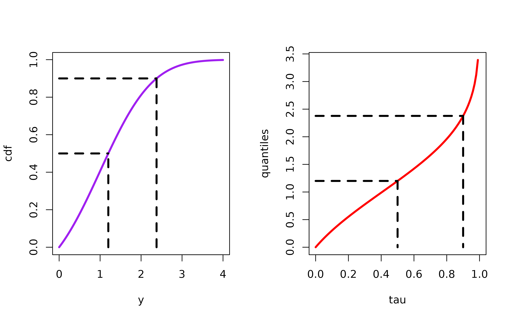
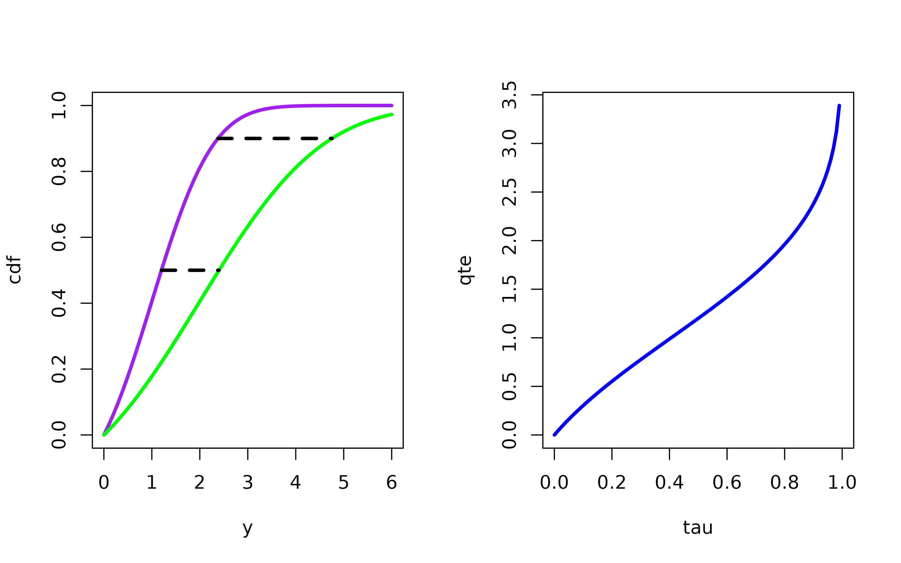
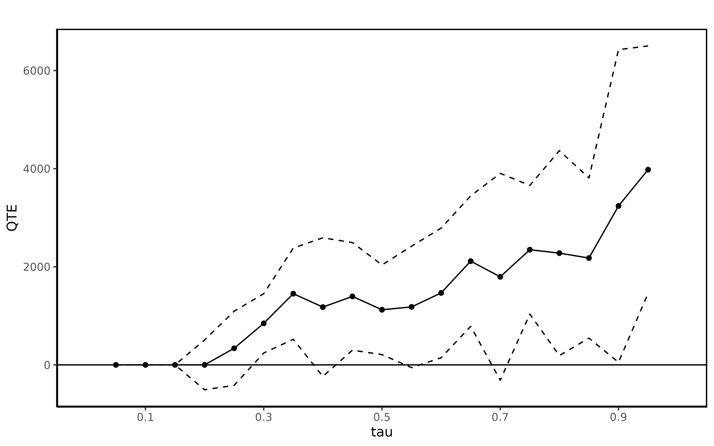
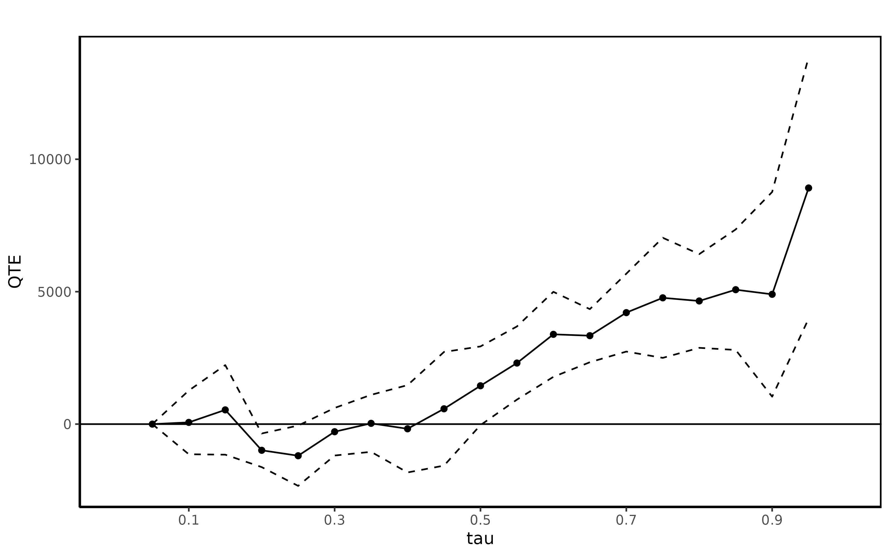
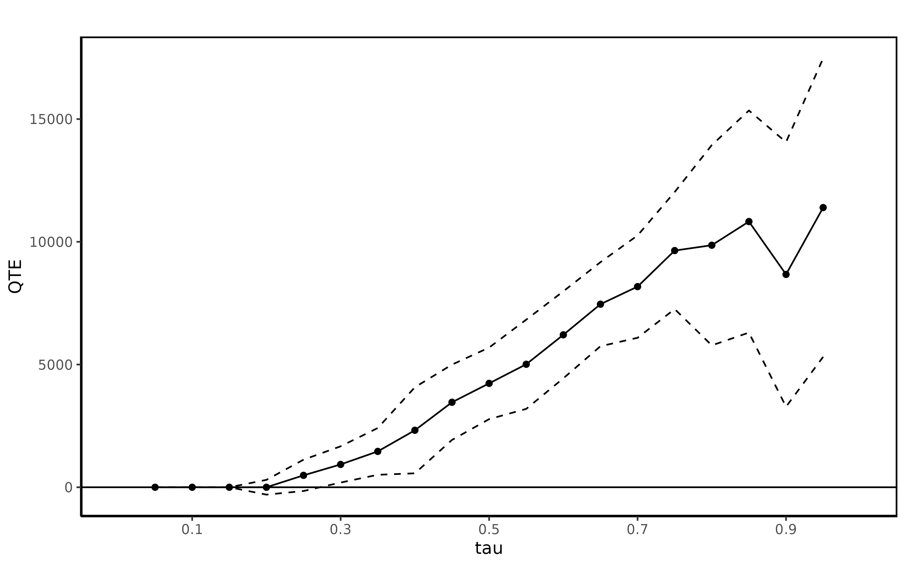

Quantile Treatment Effects in R: The qte Package
Brantly Callaway
2023-02-15
R-QTEs.RmdIntroduction
When evaluating the effect of a program, policymakers may be interested in more than just the average impact of the program. For example, there may be cases where the mean net impact (benefit minus cost) is negative, but the program is still implemented because of the distributional impacts of the program. One example from economics is the effect of a job training program. Consider two job training programs that both have the same mean net impact which is negative. If the first job training program tends to increase wages at the top of the wage distribution, it is likely to be rejected by policymakers. On the other hand, if the second job training program tends to increase wages at the bottom of the wage distribution, it may be approved by policymakers. Traditional methods, such as linear regression where the effect of participating in a program is constrained to be the same across all individuals are not suitable for distinguishing between these two types of programs. Neither are methods that allow for treatment effect heterogeneity but identify only the average effect of participating in a program. The distributional methods available in the R package QTE are useful in cases such as the above example where the researcher is interested in both allowing for treatment effect heterogeneity and understanding some aspect of the treatment effect heterogeneity.
The idea that participating in a program can have a different effect on even observationally identical individuals has a long history in the econometrics literature (Heckman and Robb 1985). There has been much recent interest in studying treatment effect heterogeneity (Heckman, Smith, and Clements 1997; Abbring and Heckman 2007). Although the QTE might not be the first choice parameter of interest for studying treatment effect heterogeneity, it is easier to identify as it only depends on the marginal distributions rather than the joint distribution. In some cases the QTE is identical to the Quantiles of the Treatment Effect (Fan and Park 2009) when individuals maintain their rank in the treated and untreated distributions and the QTE is increasing in \(\tau\). On the other hand, one can write down simply examples where the effect of treatment is heterogeneous across agents and the QTE is constant or where the QTE is not constant but there is no treatment effect heterogeneity.
This article deals with estimating QTEs in several situations that are likely to be common in applied research. Models where treatment is randomly assigned or as good as random after conditioning on some covariates.1 Methods for the case where the researcher has access to repeated cross sectional data or panel data are also available in the methods panel.qtet (Callaway and Li 2019), MDiD, QDiD, and CiC (Athey and Imbens 2006). It should also be mentioned that methods for estimating the QTE when identification is based on an instrumental variable (Frolich and Melly 2013) are not currently available in the ci.qte package though the author’s of that method do have some code available in Stata with the command ivqte.
Because the QTE and the Average Treatment Effect (ATE)2 (or the QTET and ATT) are both functions of the marginal distributions \(F_{Y_1}(y_1)\) and \(F_{Y_0}(y_0)\), estimating the QTE implies the ATE can be recovered from it. Usually, the ATE is identified under weaker conditions than the QTE; e.g. the ATE usually requires some type of mean independence assumption while the QTE requires some type of full independence assumption. As such, researchers that study the QTE are usually interested in the shape of the QTE rather than the location as the location is already available under the weaker assumptions that identify the QTE. In the job training example, the ATE is useful for thinking about whether or not participating in a job training program tends to increase wages; the QTE is useful for thinking about whether the job training program affects wages of workers at the top of the wage distribution more or less than workers at the bottom of the wage distribution.
Background on treatment effects
There is a large literature on treatment effects. (Imbens and Wooldridge 2009) provides a thorough introduction. The QTE package follows the most common setup. First, we are considering the case of a binary instrument. All individuals in the population either participate in the treatment or not. The set of participating individuals is called the treatment group; the set of non-participating individuals is called the untreated or control group.
There are many examples of programs that fit into this category. The example that we use throughout this article is a job training program. We are interested in whether or not participating in a job training program has an effect on subsequent wages. There are many other examples in different fields. In medicine, one might be interested in studying the effect of a drug on some health outcome. In a randomized experiment, this evaluation is relatively easy. A more challenging example would be the effect of cigarette smoking on longevity. Because an individual cannot be randomly assigned to smoke, the researcher must invoke some assumption to identify an effect of smoking. In political science, an example would be the effect of being the incumbent on an election outcome.
Notation
We use a common notation throughout the paper. Let \(Y_1\) and \(Y_0\) denote the potential treated outcome and potential untreated outcome for individual \(i\) (the \(i\) subscript is supressed throughout for notational simplicity), respectively. Let \(D\) be a binary variable that takes the value 1 if an individual is treated and takes the value if the individual is untreated. For each individual, only one of the potential outcomes is observed. We denote the observed outcome \(Y\) and note that it can be written as \(Y = D Y_1 + (1-D) Y_0\). In some cases, we may also observe some covariates \(X\). These covariates may affect both potential outcomes and the decision of whether or not to be treated.
The Difference in Differences models involve either repeated cross section or panel data and therefore, in those models, an additional subscript denoting time \(t\) is required. The notation is otherwise the same except, for example, \(Y_{1t}\) would denote the treated potential outcome at time \(t\) and \(Y_{0t-1}\) would denote the untreated potential outcome at time \(t-1\).
Quantiles

Figure 1: A plot of a standard normal distribution truncated from the left at zero. The lower dotted line represents the median; the upper dotted line represents the 95th percentile. The figure on the right inverts the same distribution to show the quantiles. Each dotted line once again corresponds to the median and the 95th percentile.
For a random variable \(Z\) with distribution function \(F_Z(\cdot)\), the \(\tau\)-th quantile, \(z_\tau\) is defined as
\[z_\tau = \inf\{z : F_Z(z) \geq \tau\}\]
When \(Z\) is continuously distributed, the definition can be simplified to
\[ z_\tau = F^{-1}_Z(\tau) \]
In either case, the quantile \(z_\tau\) is identified whenever the distribution function \(F_Z(\cdot)\) is identified.
Many quantiles are quite familiar. The 0.5-quantile is the median. The 0.25- and 0.75-quantiles are the 1st and 3rd quartile. The 0.01-, 0.02-, 0.03- are the 1st, 2nd, 3rd, and so on percentiles. Figure 1(a) plots the distribution function of random draws from a \(N(1,1)\) distribution truncated at 0. From the distribution function, the \(\tau\)-th quantile can be found by (i) finding \(\tau\) on the y-axis, (ii) finding where a horizontal line from that point intersects the distribution function, and (iii) drawing a vertical line down to the y-axis. In Figure 1(a), this procedure is followed to find the median and the 95-th percentile of the distribution. In Figure 1(b), the entire distribution from Figure 1(a) is inverted to obtain all the quantiles. The dotted lines in Figure 1(b) correspond to the median and the 95-th percentile.
Quantile Treatment Effects
QTEs are defined as the difference between the quantiles (for a particular value of \(\tau\)) of the treated potential outcome distribution and the untreated potential outcome distribution.

Figure 2: The figure is two cumulative distributions. The red distribution is the same truncated standard normal distribution as in Figure 1. The blue distribution is an adjusted truncated normal distribution. The lower dotted line represents the Quantile Treatment Effect for \(\tau = 0.5\); the upper dotted line represents the Quantile Treatment Effect for \(\tau = 0.95\). The figure on the right inverts both distribution functions and displays all the Quantile Treatment Effects for \(\tau \in [0,1]\)
For \(\tau \in [0,1]\) \[ QTE(\tau) = F^{-1}_{Y_1}(\tau) - F^{-1}_{Y_0}(\tau) \] Likewise, QTETs are defined as the difference between the quantiles of (i) the distribution of treated potential outcomes for the treated group and (ii) the distribution of untreated potential outcomes for the treated group. \[ QTET(\tau) = F^{-1}_{Y_1|D=1}(\tau) - F^{-1}_{Y_0|D=1}(\tau) \] For identification, the key issue is whether or not each of the distributions are identified. For the QTE, some assumption needs to be invoked to identify both \(F_{Y_{1t}}(y_1)\) and \(F_{Y_{0t}}(y_0)\). For the QTET, \(F_{Y_{1t}|D_t=1}(y_1)\) is identified directly from the data because we observe at the distribution of treated outcomes for the treated group. However, to identify \(F_{Y_{0t}|D_t=1}(y_0)\) will require some identifying assumption because we do not observe untreated potential outcomes for the treated group.
Figure 2 shows the QTE for two simulated distributions. The purple distribution in Figure 2(a) is the same as the distribution in Figure 1; the green distribution is an adjusted truncated normal distribution. The horizontal distance between the two distributions gives the QTE. For example, QTE(0.5) and QTE(0.95) are represented by the two dotted lines in the figure. The QTE for all values of \(\tau\) is plotted in Figure 2(b).
Identification and Estimation
This section covers identification and estimation under the most commonly invoked assumptions for identifying the QTE or QTET. But first, we give a brief description of the dataset used in the examples.
Data
We use data from a job training program in the 1970s. This program provided extensive job training to workers over a 9-18 month period. The program randomly assigned some applicants to the program and randomly denied some other applicants. The dataset also includes non-experimental observations from the Panel Study of Income Dynamics (PSID). None of the individuals from the PSID participated in the job training program, but they can be combined with the treated group from the job training program to form an ``observational’’ dataset. Then, various techniques that can be applied in non-experimental settings can be applied to this new dataset, and the results can be compared to the results obtained from using the full experimental dataset as a check on the performance of various non-experimental methods (LaLonde 1986). We use a subset that consists of males with three (2 pre-training and 1 post-training) years of earnings data (the outcome of interest). This subset has been considered in (Dehejia and Wahba 1999; Smith and Todd 2005; Firpo 2007).
Using the QTE package
After installing the qte package, the package can be loaded by
library(qte)and the job training datasets loaded by the following command
data(lalonde)which loads the four datasets lalonde.exp, lalonde.psid, lalonde.exp.panel, and lalonde.psid.panel. The exp datasets contain the experimental datasets, and the psid datasets contain the observational datsets. The two datasets with the suffix panel contain exactly the same data as their respective counterparts, but the data is formatted in a panel (three observations per individual in the dataset rather than one) to facilitate estimation using the Difference in Differences methods mentioned below.
The main methods in the ci.qte package are ci.qte, ci.qtet, panel.qtet, QDiD, CiC, and MDiD. These are useful for estimating the QTE and QTET and are each based on specific identifying assumptions (discussed in more detail below). Each method requires the user to supply a formula for the outcome on the treatment status, a vector of names of conditioning \(X\) variables, and a data frame. The user should also specify for which values of \(\tau\) the QTE or QTET should be calculated. There are other available parameters discussed in more detail in the manual. The most common uses are detailed in the rest of this section. Each method returns a QTE object. The QTE object contains the estimated QTE or QTET, ATE or ATT, and some other information such as standard errors and confidence intervals. Once a QTE object has been estimated, the user can call summary and ggqte methods to obtain results (a plot method is available, but we recommend the ggqte method for plotting which builds on the ggplot2 package).
Randomization
When an individual is randomly assigned to treatment, then QTE is identified. Random treatment assignment is common in medical studies. It is sometimes available in the social sciences in cases such as lab experiments, field experiments, and has sometimes been built into some programs such as job training. Randomization is sometimes called the “gold standard” of empirical research, but though there are some questions that randomization cannot answer and randomized experiments in practice may differ from randomized experiments in theory [Heckman and Smith (1995); manski-1996]. For example, individuals may not comply with their random assignment.^[Without perfect compliance, the random assignment to the treated or untreated group can be used as an instrument for actual treatment status. This setup can lead to identification of the ATT (Imbens and Angrist 1994} or a conditional QTET [@abadie-angrist-imbens-2002]. This approach is not currently available in the QTE package.)
Under randomization, the following independence condition holds \[ (Y_1, Y_0) \perp D \] Under this assumption, the marginal distributions \(F_{Y_1}(y_1)\) and \(F_{Y_0}(y_0)\) are both identified. The reason they are identified is that \(F_{Y_1}(y_1) = F_{Y|D=1}(y_1)\) and \(F_{Y_0}(y_0) = F_{Y|D=0}(y_0)\) under the above condition. And each of the two distributions \(F_{Y|D=1}(y_1)\) and \(F_{Y|D=0}(y_1)\) can be obtained by looking at the distribution of outcomes for the treated group and the untreated group, respectively. In other words, under randomization of treatment, the partially unobserved distribution of treated potential outcomes is the same as the fully observed distribution of realized outcomes for the treated group; and likewise, the partially unobserved distribution of untreated potential outcomes is the same as the fully observed distribution of realized outcomes for the untreated group.
Estimation
Under randomization, the QTE can be easily esimated using the ci.qte command with no covariates. In this section, we use the experimental portion of the job training set. The ci.qte method also computes an estimate of the Average Treatment Effect as a byproduct.
In the case of the job training program, the parameter being identified is the QTET. Individuals who desired to be treated were randomized into or out of the program. To see this, let \(D^*\) be a binary variable indicating whether an individual desires to be treated (\(D^*=1\)) or does not desire to be treated (\(D^*=0\)). Because individuals that do not desire to be treated never attempt to join the job training program, they cannot be randomized. Amongst those individuals who desire to be treated, some are assigned to the job training program (\(R=1\)) and some are randomized out of the program (\(R=0\)). Under this setup, \((Y_1, Y_0) \perp R | D^*=1\). The distribution \(F_{Y_{1}|D=1}(y_1) = F_{Y_{1}|D^*=1, R=1}(y_1)\) is identifed using the outcomes from the group with \(D^*=1\) and \(R=1\). The distribution \(F_{Y_{0}|D=1}(y_0) = F_{Y_{0}|D^*=1, R=1}(y_0) = F_{Y_{0}|D^*=1, R=0}(y_0)\) where the last equality holds by the assumption. This last distribution can be constructed using observations of untreated outcomes for the group that was randomized out of treatment.
The results from the ci.qte or ci.qtet command will be identical in this case, but it is important to note what the correct interpretation of the results is. The QTET can be estimated with the following command
The ci.qtet command returns a QTE object
class(jt.rand)## [1] "QTE"and the summary command provides the results
summary(jt.rand)##
## Quantile Treatment Effect:
##
## tau QTE Std. Error
## 0.05 0.00 0.00
## 0.1 0.00 0.00
## 0.15 0.00 0.00
## 0.2 0.00 258.90
## 0.25 338.65 385.30
## 0.3 846.40 308.38
## 0.35 1451.51 474.59
## 0.4 1177.72 720.97
## 0.45 1396.08 559.59
## 0.5 1123.55 466.47
## 0.55 1181.54 631.75
## 0.6 1466.51 674.24
## 0.65 2115.04 678.34
## 0.7 1795.12 1076.19
## 0.75 2347.49 669.07
## 0.8 2278.12 1065.59
## 0.85 2178.28 832.99
## 0.9 3239.60 1625.80
## 0.95 3979.62 1287.02
##
## Average Treatment Effect: 1794.34
## Std. Error: 345.35The QTET can also be plotted with the ggqte command.
ggqte(jt.rand)
Conditional Independence Assumption
A second assumption that can be used to identify the QTE is the following
\[ (Y_1, Y_0) \perp D | X \]
were \(X\) is a vector of covariates. This assumption says that after conditioning on these \(X\) covariates, selection into treatment is as good as random. The Conditional Independence Assumption is sometimes also called Selection on Observables. In the example of the job training program, \(X\) may contain variables such as age, education, and other background characteristics. In practice, under the Conditional Independence Assumption, individuals with ``similar’’ characteristics can be compared across treatment status to build potential outcome distributions. If individuals with the same covariates select into treatment based on the expected gain from treatment (e.g. if individuals that experience larger gains from job training are more likely to participate in job training than observationally similar individuals that would experience smaller gains), then this assumption is necessarily violated. Also, note that this assumption is a full independence assumption. It does identify the Average Treatment Effect, but the ATE can be identified under a weaker mean independence assumption.
When the researcher has access to panel data, lags of the outcome or lags of the other covariates could be included in \(X\). This may make the identifying assumption more plausible in applications. In the job training example \(X\) could contain lags of earnings or unemployment histories which may be important to condition on to correctly evaluate job training programs (Ashenfelter 1978; Heckman, Smith, and Clements 1997).
The Conditional Independence Assumption implies that the distributions \(F_{Y_1|X}(y_1)\) and \(F_{Y_0|X}(y_0)\) are identified. This follows because \(F_{Y_j|X}(y_j) = F_{Y_j|X,D=j}(y_j)\) under the Conditional Independence Assumption, and the latter quantity can be obtained by calculating the conditional distribution of observed outcomes for members of each group. Then, \(F_{Y_0}(y_1)\) and \(F_{Y_0}(y_0)\) can be obtained by integrating out \(X\). For example,
\[ F_{Y_1}(y_1) = E_X[F_{Y_1|X}(y_1)] \]
This distribution can be easily inverted to obtain the quantiles. Although this identification result is straightforward, implementing it may be challenging in practice. The most natural estimator is \(\hat{F}_{Y_1}(y_1) = \frac{1}{n} \sum_{i=1}^n \hat{F}_{Y_1|X=X_i}(y_1)\). However, in general (for example when at least one of the elements of \(X\) is continuous), an estimator for \(\hat{F}_{Y_1|X=x}(y_1)\) will be computationally difficult as it requires some smoothing procedure such as kernel or series methods. These methods have the additional difficulty of requiring the researcher to choose a bandwidth in the case of kernels or the number of terms in the case of series methods.
Instead, the QTE package implements the propensity score re-weighting approach developed in (Firpo 2007). The propensity score is \(p(x) = P(D=1|X=x)\), and the propensity score re-weighting approach rewrites \(E_X[F_{Y_1|X}(y_1)]\) as a single unconditional moment that depends on \(y_1\) and the propensity score. The propensity score is estimated in a first step and then a sum of weighted check functions is minimized in a second step to obtain an estimate of the QTET. This technique allows some flexibility in trading off stronger assumptions with computational complexity. For example, a parametric specification for the propensity score will be computationally easy, but will rely on distributional and functional form assumptions that may not be correct. On the other hand, nonparametric methods may be used that rely on less restrictive assumptions (though they do require some smoothness conditions on the propensity score), but they are likely to be more computationally complex.
Estimation
Estimation of QTEs under the Conditional Independence Assumption can be performed using the command ci.qte, and estimation of the QTET can be performed with the command ci.qtet. With covariates, this command estimates unconditional QTEs using the propensity score re-weighting procedure of (Firpo 2007). Without modification, the command estimates in a first stage the propensity score using a logit model where all the covariates enter in levels.
The following command estimates the QTE of the job training program using the observational data and conditioning on several available variables.
jt.cia <- ci.qte(re78 ~ treat,
xformla=~age + education,
data=lalonde.psid,
probs=seq(0.05,0.95,0.05), se=T, iters=10)
summary(jt.cia)##
## Quantile Treatment Effect:
##
## tau QTE Std. Error
## 0.05 0.00 0.00
## 0.1 0.00 0.00
## 0.15 -4433.18 1198.69
## 0.2 -8219.15 718.36
## 0.25 -10435.74 1054.95
## 0.3 -12232.03 996.99
## 0.35 -12428.30 1608.31
## 0.4 -14195.24 2009.87
## 0.45 -14248.66 1701.14
## 0.5 -15538.67 2062.94
## 0.55 -16550.71 2616.84
## 0.6 -15595.02 2999.45
## 0.65 -15827.52 2912.97
## 0.7 -16090.32 2662.93
## 0.75 -16091.49 3379.79
## 0.8 -17864.76 4219.90
## 0.85 -16756.71 4852.37
## 0.9 -17914.99 4214.26
## 0.95 -23646.22 3934.80
##
## Average Treatment Effect: -13435.40
## Std. Error: 1821.48and the QTE can be plotted
ggqte(jt.cia)and next the QTET of the job training is computed under the same setup
jt.ciat <- ci.qtet(re78 ~ treat,
xformla=~age + education,
data=lalonde.psid,
probs=seq(0.05,0.95,0.05), se=T, iters=10)
summary(jt.ciat)##
## Quantile Treatment Effect:
##
## tau QTE Std. Error
## 0.05 0.00 0.00
## 0.1 -1018.15 638.08
## 0.15 -3251.00 1346.80
## 0.2 -7240.86 1120.03
## 0.25 -8379.94 607.30
## 0.3 -8758.82 908.18
## 0.35 -9897.44 980.34
## 0.4 -10239.57 1134.72
## 0.45 -10751.39 1236.01
## 0.5 -10570.14 1038.85
## 0.55 -11348.96 947.75
## 0.6 -11550.84 1107.62
## 0.65 -12203.56 1149.92
## 0.7 -13277.72 1030.71
## 0.75 -14011.74 1070.05
## 0.8 -14373.95 1141.25
## 0.85 -14499.18 1243.54
## 0.9 -15008.63 2157.47
## 0.95 -15954.05 1698.33
##
## Average Treatment Effect: 4266.19
## Std. Error: 510.82Finally, the QTET is plotted
ggqte(jt.ciat)Difference in Differences Methods
In some applications the Conditional Indpendence Assumption may not hold. An alternative identifying assumption that the researcher may be interested in making is the following Distributional Difference in Differences Assumption
\[ \Delta Y_{0t} \perp D_t | X \]
This is the identifying assumption made in (Fan and Yu 2012; Callaway and Li 2019). This is a direct extension of the ``parallel trends’’ assumption made in the Difference in Differences literature (Abadie 2005).
Note that these types of methods only identify the QTET (not the QTE). (Callaway and Li 2019) show that this assumption only identifies the QTET when the researcher has access to three periods of panel data.
Estimation
Estimation using the method in (Callaway and Li 2019) is similar to the preceding methods. However, the user must now additionally specify some extra parameters: (i) t, tmin1, and tmin2 are the three time periods, and (ii) the names of the columns in data containing the time period and an individual id are required to be passed in as tname and idname. data itself must now be a panel dataset containing individual-time period observations. For this section the lalonde.psid dataset (which contains one row for each individual and with two lags of earnings available) has been converted into the lalonde.psid.panel (which contains three rows of observations for each individual).
head(lalonde.psid.panel)[,c("id", "year", "re", "treat",
"age", "education", "black", "hispanic", "married", "nodegree", "u75")]## id year re treat age education black hispanic married nodegree u75
## 1 1 1978 9930.05 1 37 11 1 0 1 1 1
## 2 2 1978 3595.89 1 22 9 0 1 0 1 1
## 3 3 1978 24909.50 1 30 12 1 0 0 0 1
## 4 4 1978 7506.15 1 27 11 1 0 0 1 1
## 5 5 1978 289.79 1 33 8 1 0 0 1 1
## 6 6 1978 4056.49 1 22 9 1 0 0 1 1The (Callaway and Li 2019) method can be invoked with the panel.qtet command:
jt.pqtet <- panel.qtet(re ~ treat, t=1978, tmin1=1975, tmin2=1974,
tname="year", idname="id",
data=lalonde.psid.panel,
probs=seq(0.05,0.95,0.05), se=T, iters=10)
summary(jt.pqtet)##
## Quantile Treatment Effect:
##
## tau QTE Std. Error
## 0.05 4779.21 1077.47
## 0.1 1987.35 632.20
## 0.15 842.95 578.85
## 0.2 -7366.04 1971.72
## 0.25 -8449.96 2702.63
## 0.3 -7992.15 1495.16
## 0.35 -7429.21 1672.73
## 0.4 -6597.37 1745.94
## 0.45 -5519.45 1863.02
## 0.5 -4702.88 1664.44
## 0.55 -3904.52 1704.02
## 0.6 -2741.80 1766.84
## 0.65 -1507.31 1862.25
## 0.7 -771.12 1935.15
## 0.75 707.81 1708.49
## 0.8 580.00 995.66
## 0.85 821.75 743.91
## 0.9 -250.77 1496.21
## 0.95 -1874.54 2836.41
##
## Average Treatment Effect: 2326.51
## Std. Error: 929.87
ggqte(jt.pqtet)
In the most common Difference in Differences case with two periods of panel or repeated cross sectional data, (Fan and Yu 2012) shows that the Distributional Difference in Differences Assumption leads to partial identification of the QTET. In this case, a user can estimate these bounds using the method bounds:3
b1 <- bounds(re ~ treat, t=1978, tmin1=1975, data=lalonde.psid.panel,
idname="id", tname="year")
summary(b1)##
## Bounds on the Quantile Treatment Effect on the Treated:
##
## tau Lower Bound Upper Bound
## tau Lower Bound Upper Bound
## 0.05 -51.72 0
## 0.1 -1220.84 0
## 0.15 -1881.9 0
## 0.2 -2601.32 0
## 0.25 -2916.38 485.23
## 0.3 -3080.16 943.05
## 0.35 -3327.89 1505.98
## 0.4 -3240.59 2133.59
## 0.45 -2982.51 2616.84
## 0.5 -3108.01 2566.2
## 0.55 -3342.66 2672.82
## 0.6 -3491.4 3065.7
## 0.65 -3739.74 3349.74
## 0.7 -4647.82 2992.03
## 0.75 -4826.78 3219.32
## 0.8 -5801.7 2702.33
## 0.85 -6588.61 2499.41
## 0.9 -8953.84 2020.84
## 0.95 -14283.61 397.04
##
## Average Treatment Effect on the Treated: 2326.51and the bounds can be plotted
plot(b1) Finally, the QTE package implements several other methods that base identification on a Difference in Differences-type assumption. Each of these methods achieve point identification when only two periods of repeated cross sectional data is available. First, the identifying assumption for Quantile Difference in Differences (implemented in the QDiD method) is
\[ F^{-1}_{Y_{0t}|D_t=1}(\tau) - F^{-1}_{Y_{0t-1}|D_t=1}(\tau) = F^{-1}_{Y_{0t}|D_t=0}(\tau) - F^{-1}_{Y_{0t-1}|D_t=0}(\tau) \]
From this expression, we notice that \(F^{-1}_{Y_{0t}|D_t=1}(\tau)\) is the term that needs to be identified for identification of the QTET. The other terms are identified because (i) no one is treated (by assumption) in the first period and (ii) untreated potential outcomes are observed for the untreated group. Invoking a conditional on covariates version of this assumption is not straightforward. We do provide a method for invoking this assumption with covariates. First, a linear model with all the terms in \(X\) is run and the residuals plus the predicted value of the group effect are recovered. Then, the unconditional version of the model is run on these terms.
Next, the identifying assumption for the Change in Changes model of (Athey and Imbens 2006) can be stated nonparametrically as
\[ F_{Y_{0t}|D_t=1}^{-1}(\tau) - F_{Y_{0t-1}|D_t=1}^{-1}(\tau) = F_{Y_{0t}|D_t=0}^{-1}(F_{Y_{0t-1}|D_t=0}(y)) - F_{Y_{0t-1}|D_t=0}^{-1}(F_{Y_{0t-1}|D_t=0}(y)) \]
Whereas QDiD treats time and group symmetrically, CiC treats time and group asymmetrically. The other advantage of computing QTET with this method is that it is invariant to the scale of the dependent variable. The Change in Changes model is implemented by the method CiC.
Finally, the identifying assumption for the Mean Difference in Differences model is
\[ F_{Y_{0t}|D_t=1}^{-1}(\tau) - F_{Y_{0t-1}|D_t=1}^{-1}(\tau) = E[Y_{0t} - Y_{0t-1} | D_t=0] \]
This assumption is restrictive in that it restricts the difference in the quantiles of the distribution of untreated potential outcomes for the treated group in periods \(t\) and \(t-1\) be the same for all values of \(\tau\).
Estimation
The QTET for participating in the job training program is estimated using each of the three methods ddid2, QDiD, and CiC next.
jt.ddid2 <- ddid2(re ~ treat, t=1978, tmin1=1975,
tname="year", idname="id",
data=lalonde.psid.panel,
probs=seq(0.05,0.95,0.05), se=T, iters=10)
summary(jt.ddid2)##
## Quantile Treatment Effect:
##
## tau QTE Std. Error
## 0.05 10616.61 1039.48
## 0.1 5019.83 332.66
## 0.15 2388.12 261.21
## 0.2 1033.23 262.24
## 0.25 485.23 287.24
## 0.3 943.05 251.90
## 0.35 931.45 269.98
## 0.4 945.35 607.51
## 0.45 1205.88 429.10
## 0.5 1362.11 392.98
## 0.55 1279.05 719.15
## 0.6 1618.13 1005.67
## 0.65 1834.30 979.01
## 0.7 1326.06 1037.50
## 0.75 1586.35 833.80
## 0.8 1256.09 778.26
## 0.85 723.10 902.21
## 0.9 251.36 1728.61
## 0.95 -1509.92 2544.38
##
## Average Treatment Effect: 2326.51
## Std. Error: 497.97
ggqte(jt.ddid2)
jt.qdid <- QDiD(re ~ treat, t=1978, tmin1=1975,
tname="year", idname="id",
data=lalonde.psid.panel,
probs=seq(0.05,0.95,0.05), se=T, iters=10, panel=T)
summary(jt.qdid)##
## Quantile Treatment Effect:
##
## tau QTE Std. Error
## 0.05 0.00 0.00
## 0.1 64.45 613.85
## 0.15 536.67 862.68
## 0.2 -988.94 323.97
## 0.25 -1194.26 581.05
## 0.3 -287.93 458.10
## 0.35 28.62 549.07
## 0.4 -177.15 841.06
## 0.45 578.25 1094.89
## 0.5 1447.37 757.83
## 0.55 2305.26 704.65
## 0.6 3389.17 818.90
## 0.65 3338.47 511.52
## 0.7 4208.92 750.20
## 0.75 4767.96 1156.77
## 0.8 4649.06 902.82
## 0.85 5075.03 1160.71
## 0.9 4900.29 1971.45
## 0.95 8915.09 2518.20
##
## Average Treatment Effect: 1684.96
## Std. Error: 779.91
ggqte(jt.qdid)
jt.cic <- CiC(re ~ treat, t=1978, tmin1=1975,
tname="year", idname="id",
data=lalonde.psid.panel,
probs=seq(0.05,0.95,0.05), se=T, iters=10, panel=T)
summary(jt.cic)##
## Quantile Treatment Effect:
##
## tau QTE Std. Error
## 0.05 0.00 0.00
## 0.1 0.00 0.00
## 0.15 0.00 0.00
## 0.2 0.00 153.44
## 0.25 485.23 325.47
## 0.3 929.88 376.87
## 0.35 1460.36 486.14
## 0.4 2321.11 894.55
## 0.45 3462.56 782.79
## 0.5 4232.31 743.75
## 0.55 5010.34 927.41
## 0.6 6210.67 904.05
## 0.65 7458.11 873.58
## 0.7 8173.91 1063.56
## 0.75 9643.00 1216.90
## 0.8 9860.76 2081.74
## 0.85 10824.63 2308.16
## 0.9 8670.99 2750.48
## 0.95 11394.77 3102.93
##
## Average Treatment Effect: 5089.64
## Std. Error: 1009.14
ggqte(jt.cic)
References
Abadie, Alberto. 2005. “Semiparametric Difference-in-Differences Estimators.” The Review of Economic Studies 72 (1): 1–19.
Abadie, Alberto, Joshua Angrist, and Guido Imbens. 2002. “Instrumental Variables Estimates of the Effect of Subsidized Training on the Quantiles of Trainee Earnings.” Econometrica 70 (1): 91–117.
Abbring, Jaap, and James Heckman. 2007. “Econometric Evaluation of Social Programs, Part Iii: Distributional Treatment Effects, Dynamic Treatment Effects, Dynamic Discrete Choice, and General Equilibrium Policy Evaluation.” Handbook of Econometrics 6: 5145–5303.
Ashenfelter, Orley. 1978. “Estimating the Effect of Training Programs on Earnings.” The Review of Economics and Statistics, 47–57.
Athey, Susan, and Guido Imbens. 2006. “Identification and Inference in Nonlinear Difference-in-Differences Models.” Econometrica 74 (2): 431–97.
Callaway, Brantly, and Tong Li. 2019. “Quantile Treatment Effects in Difference in Differences Models with Panel Data.” Quantitative Economics 10 (4): 1579–1618.
Dehejia, Rajeev, and Sadek Wahba. 1999. “Causal Effects in Nonexperimental Studies: Reevaluating the Evaluation of Training Programs.” Journal of the American Statistical Association 94 (448): 1053–62.
Fan, Yanqin, and Sang Soo Park. 2009. “Partial Identification of the Distribution of Treatment Effects and Its Confidence Sets.” Advances in Econometrics 25: 3–70.
Fan, Yanqin, and Zhengfei Yu. 2012. “Partial Identification of Distributional and Quantile Treatment Effects in Difference-in-Differences Models.” Economics Letters 115 (3): 511–15.
Firpo, Sergio. 2007. “Efficient Semiparametric Estimation of Quantile Treatment Effects.” Econometrica 75 (1): 259–76.
Frolich, Markus, and Blaise Melly. 2013. “Unconditional Quantile Treatment Effects Under Endogeneity.” Journal of Business & Economic Statistics 31 (3): 346–57.
Heckman, James J, and Jeffrey A Smith. 1995. “Assessing the Case for Social Experiments.” The Journal of Economic Perspectives 9 (2): 85–110.
Heckman, James, and Richard Robb. 1985. “Alternative Methods for Evaluating the Impact of Interventions.” In Longitudinal Analysis of Labor Market Data, edited by James Heckman and Burton Singer, 156–246. Cambridge: Cambridge University Press.
Heckman, James, Jeffrey Smith, and Nancy Clements. 1997. “Making the Most Out of Programme Evaluations and Social Experiments: Accounting for Heterogeneity in Programme Impacts.” The Review of Economic Studies 64 (4): 487–535.
Imbens, Guido, and Joshua Angrist. 1994. “Identification and Estimation of Local Average Treatment Effects.” Econometrica, 467–75.
Imbens, Guido, and Jeffrey Wooldridge. 2009. “Recent Developments in the Econometrics of Program Evaluation.” Journal of Economic Literature 47 (1): 5–86.
LaLonde, Robert. 1986. “Evaluating the Econometric Evaluations of Training Programs with Experimental Data.” American Economic Review, 604–20.
Smith, Jeffrey, and Petra Todd. 2005. “Does Matching Overcome Lalonde’s Critique of Nonexperimental Estimators?” Journal of Econometrics 125 (1): 305–53.
This type of assumption is typically called either Selection on Observables or a Conditional Independence assumption are handled by the
ci.qteorci.qtetmethods using the method developed in (Firpo 2007).↩︎The R package
Matchingis available to estimate the ATE and the ATT using matching technques. In theci.qtepackage, their are estimators of the ATE or ATT available as a by-product of estimating quantile treatment effects. These are typically based on re-weighting.↩︎Currently, no standard errors or confidence intervals are computed using the
boundsmethod.↩︎